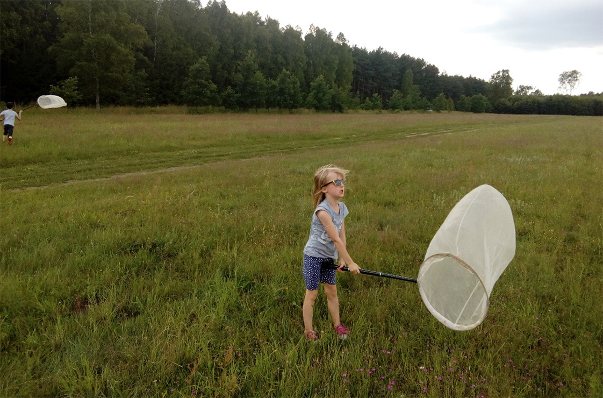

Na tej stronie powiem o moich pasjach aktualnych lub tych z dzieciñstwa.Jedn¹ z aktualnych pasji jest zbieranie znaczków pocztowych oraz zwiedzanie historycznych muzeów.W dzieciñstwie lubi³am bardzo ³apaæ motyle do s³oików lecz przez moj¹ kontuzje nogi zrezygnowa³am z tego zajêcia i ju¿ nie wróci³am do niego z obawy o kolejn¹ kontuzje. Równie¿ bardzo pasjonowa³o mnie czytanie o ró¿nych gatunkach grzybów atlasy o nich mog³am znaleŸæ zawsze u babci tam spêdza³am du¿o czasu.
